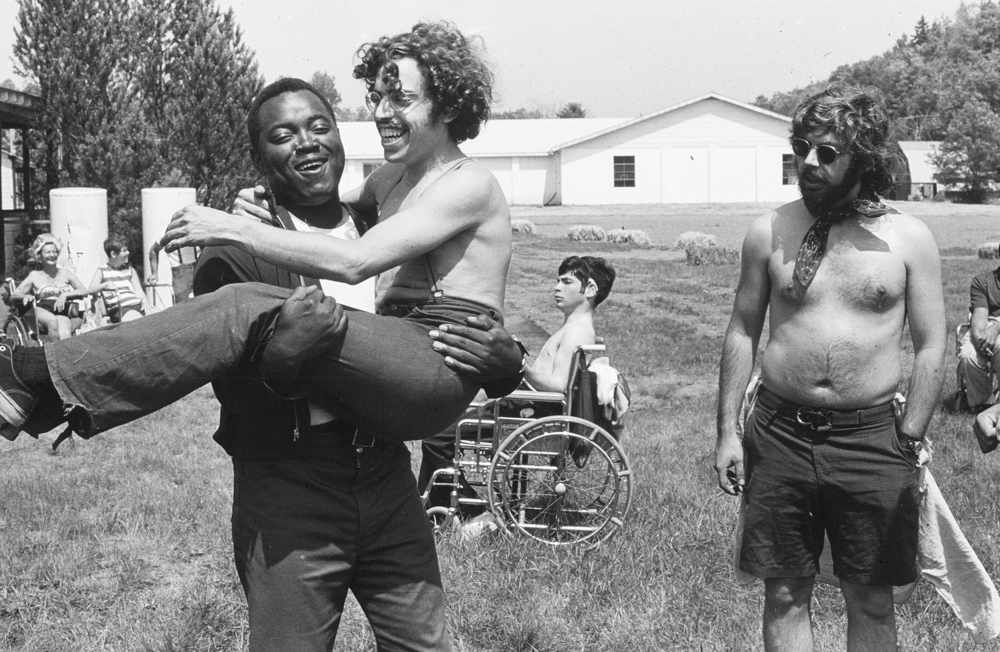
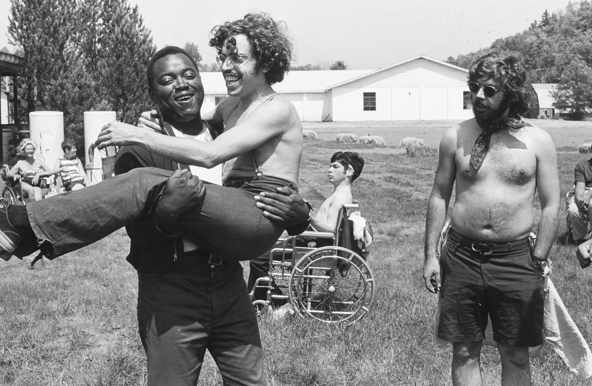

Socialization
In this lesson, you will learn how the self is connected to social phenomena, such as gender, race, and the media, and how interactions construct them all. You will be acquiring some new analytic tools, including the concepts of socialization and impression management. This lesson presents concepts of self from Freud, Mead, and Cooley; impression management and presentation of the self from Goffman; socialization; statuses and roles; and the social construction of emotions. You will be introduced to a new way of looking at the self—indeed, a new way of looking at your self—that emphasizes the role of the social in creating the individual. And you will be reminded of the reverse: as your society makes you who you are, you have a role (in fact, many roles) to play in shaping your society. The Case Study for this week allows you a chance to analzye how behaviors travel through social networks.
Learning Objectives
By the end of this lesson, you will be able to:
Identify processes of socialization and theories of the self
Evaluate research on social networks.
Compare socialization agents.
Read

Discuss: Crip Camp

Just down the road from Woodstock, in the late 1960s and early 1970s, a parallel revolution blossomed in a ramshackle summer camp for disabled teenagers. Steeped in the humor and music of the era, Crip Camp explores the universal experience of summer camp awakenings that would transform lives and shape the future of the disability rights movement. Told from the point of view of former camper Jim LeBrecht, the film traces the journeys of campers up to the present day, in this compelling and untold story of a powerful journey towards inclusion. ida
We will use the documentary film Crip Camp as an opportunity to identify and evaluate socialization concepts. We will watch it together during class.
Before Thursday, start thinking about what socialization concepts are likely to be most relevant.
Case Study: Obesity
In this assignment, you will read about a sociological study that examined whether obesity spreads like a contagion through social networks. You will then be asked five questions about the research. These case studies help you develop your ability to understand and evaluate social science research and make connections between research and our theoretical toolkit.
Note: Once you start, you only have 30 minutes to complete this assignment. Students with ARS accomodations may have additional time.
You can find the case study on Sakai under Tests and Quizzes. It is only available during this lesson week.
Deadlines
Be sure to hand these in before the deadline
Inquizitive Chapter 4 (Thusday at 9:30am)
Is Obesity Contagious Case Study (Sunday at 11:55pm)
Crip Camp reflection (Sunday at 11:55pm)
Questions
Questions about assignments or the lesson?
Post it in the Slack #ask-a-prof channel!
Ask your peers in the Slack #ask-anyone chanel!
Signup for virtual office hours!
Email me or your TA.
The least you need to know
Theoretical perspectives of the self


Socialization¶
In this lesson, you will learn how the self is connected to social phenomena, such as gender, race, and the media, and how interactions construct them all. You will be acquiring some new analytic tools, including the concepts of socialization and impression management. This lesson presents concepts of self from Freud, Mead, and Cooley; impression management and presentation of the self from Goffman; socialization; statuses and roles; and the social construction of emotions. You will be introduced to a new way of looking at the self—indeed, a new way of looking at your self—that emphasizes the role of the social in creating the individual. And you will be reminded of the reverse: as your society makes you who you are, you have a role (in fact, many roles) to play in shaping your society. The Case Study for this week allows you a chance to analzye how behaviors travel through social networks.
Learning Objectives¶
By the end of this lesson, you will be able to:
Identify processes of socialization and theories of the self
Evaluate research on social networks.
Compare socialization agents.
Read¶
‘Socialization’, Chapter 4 in Real World
Watch¶
Social Development
Socialization
Social Interaction & Performance
Discuss: Crip Camp¶

We will use the documentary film Crip Camp as an opportunity to identify and evaluate socialization concepts. We will watch it together during class.
Be sure to have the movie ready to go at the start of class.
Login to the course Slack by 9:45am and say hi to your group!
Before Thursday, start thinking about what socialization concepts are likely to be most relevant.
Case Study: Obesity¶
In this assignment, you will read about a sociological study that examined whether obesity spreads like a contagion through social networks. You will then be asked five questions about the research. These case studies help you develop your ability to understand and evaluate social science research and make connections between research and our theoretical toolkit.
Note: Once you start, you only have 30 minutes to complete this assignment. Students with ARS accomodations may have additional time.
You can find the case study on Sakai under Tests and Quizzes. It is only available during this lesson week.
Deadlines¶
Be sure to hand these in before the deadline
Inquizitive Chapter 4 (Thusday at 9:30am)
Is Obesity Contagious Case Study (Sunday at 11:55pm)
Crip Camp reflection (Sunday at 11:55pm)
Questions¶
Questions about assignments or the lesson?
Post it in the Slack #ask-a-prof channel!
Ask your peers in the Slack #ask-anyone chanel!
Signup for virtual office hours!
Email me or your TA.
Lesson Keywords¶
Socialization
Self
Looking-glass self
Mead’s theory of the self
Generalized other
Thomas theorem
Definition of the situation
Dramaturgy
Impression management
Frontstage/backstage
Social construction
cooling the mark out
agents of socialization
hidden curriculum
total institutions
resocialization
status
ascribed status
embodied status
achieved status
master status
role
role conflict
role strain
emotional work/labor
agency
saturated self
The least you need to know¶
Theoretical perspectives of the self